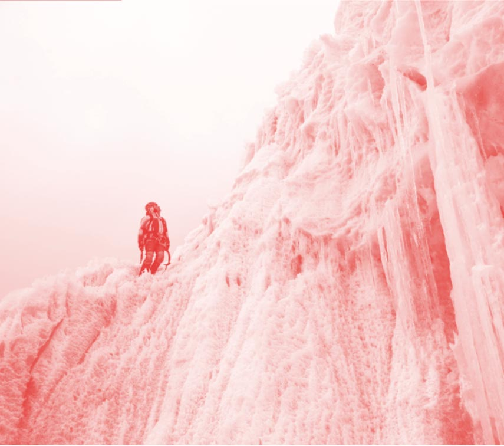
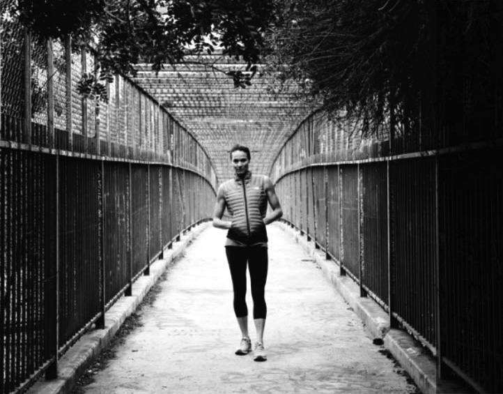

Hillaree Nelson
by Jimmy Chin

Outside Magazine named her one of the most adventurous women in the world of sports. Born and raised in the Northwest, Hilaree began skiing at age 3 at Stevens Pass in the Cascade Mountains of Washington State. Eventually she moved to the Chamonix Valley of France where she learned most of what she needed to know in order to take her skiing skills to the next level.
Combining a passion for exploration, mountains and skiing, ski mountaineer Hilaree Nelson has traveled to some of the most exotic mountain ranges on earth. She’s skied from the Himalayan summit of Cho Oyu in Tibet and climbed and skied several high peaks in Bolivia and Argentina. Elsewhere, she’s cut turns on remote volcanoes in the Kamchatka Peninsula of Russia, as well as many first descents in the tight couloirs of Baffin Island. In addition to her travels as an athlete for The North Face, Hilaree is a mother to two young boys, and although they have changed her life dramatically, her passion for the mountains has not abated. Hilaree lives in Colorado and finds her sanity in the beautiful San Juan Mountains.
 